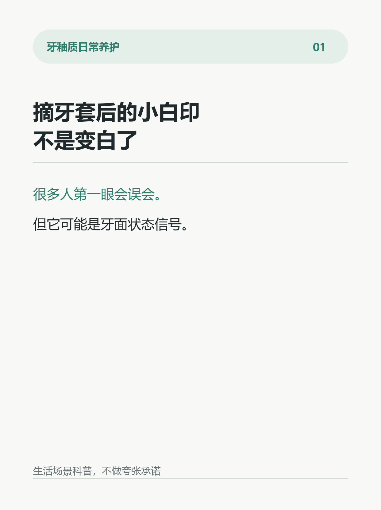
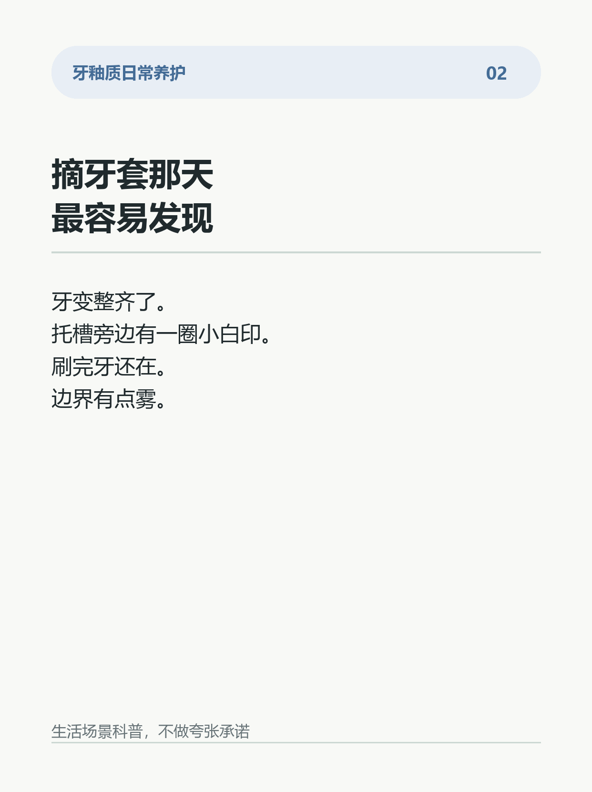
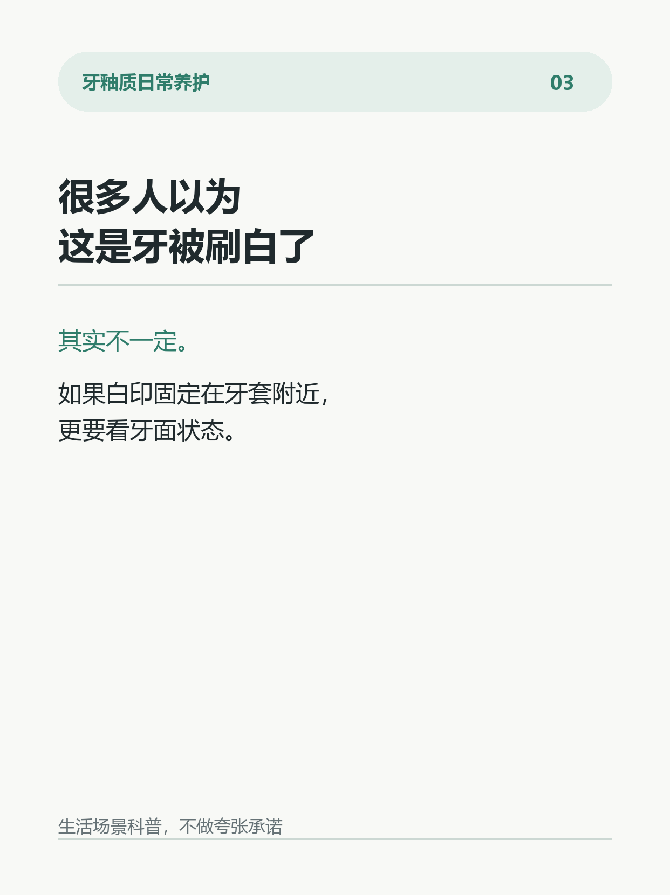
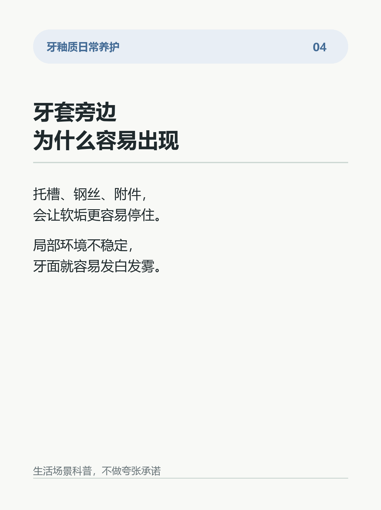
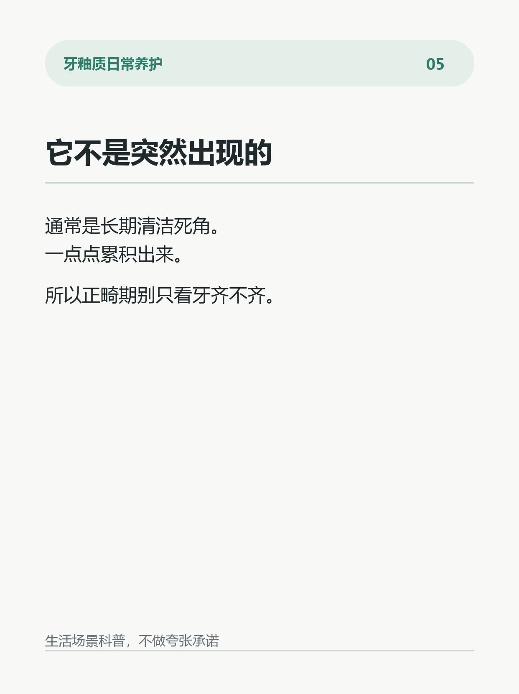
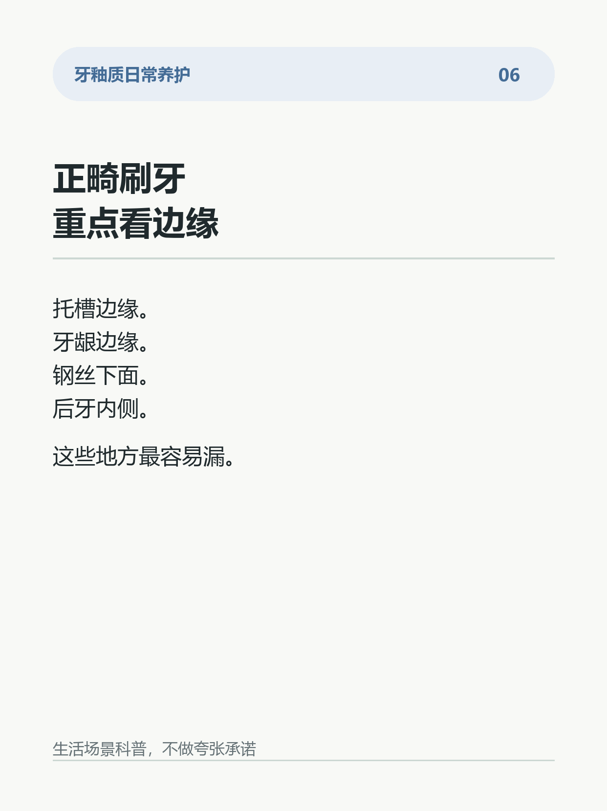
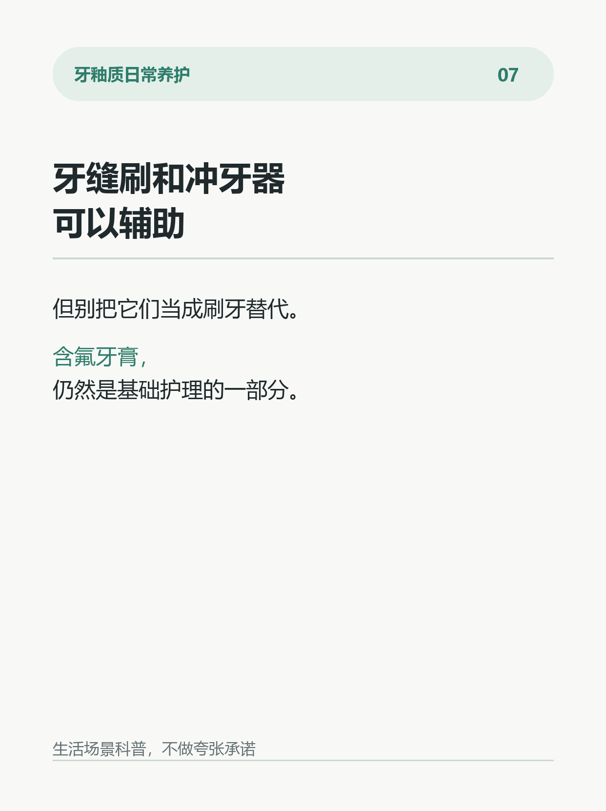
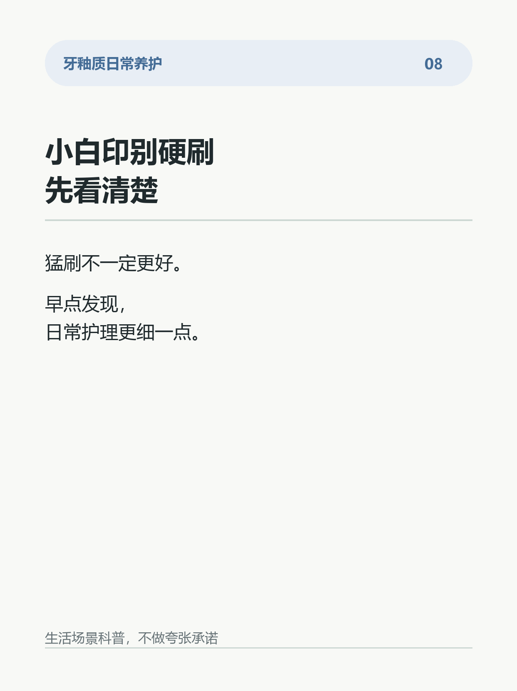

摘牙套后的小白印，不是变白了
很多人以为，摘牙套后牙面上那圈小白印，是“牙变白了”。
其实不一定。
如果白印出现在托槽周围、边界有点雾、刷完牙也还在，更常见的解释是：那一小块牙面曾经长期更难刷干净，矿物状态变得不稳定。
这就是正畸人群很容易忽略的牙面信号。
为什么牙套旁边更容易出现？
托槽、钢丝、附件会让食物残留和软垢更容易停住。
如果清洁不到位，局部酸性环境出现得更频繁，牙釉质里的矿物更容易被带走，表面看起来就会发白、发雾。
误区是：
不是牙越刷越白。
也不是所有白印都能靠猛刷变淡。
更稳的日常做法：
1. 正畸期间重点刷托槽边缘和牙龈边缘。
2. 牙缝刷、冲牙器可以辅助，但不能替代刷牙。
3. 含氟牙膏是基础护理的一部分。
4. 发现固定白印，建议做一次口腔检查，先判断牙面状态。
这类内容不适合夸张承诺。
能做的是：早点发现，日常护理更细一点，让牙面状态更稳定。
你身边有没有人摘牙套后发现小白印？
#牙釉质 #正畸 #牙套 #白斑 #护牙日常 #含氟牙膏 #刷牙习惯 #牙齿敏感







